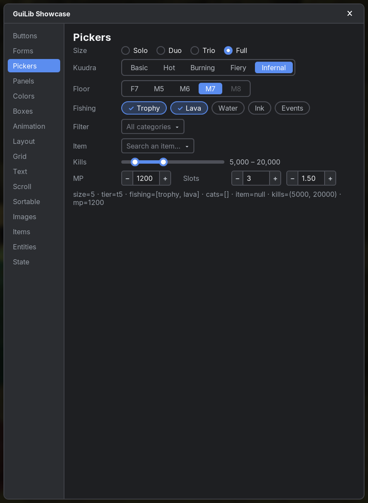
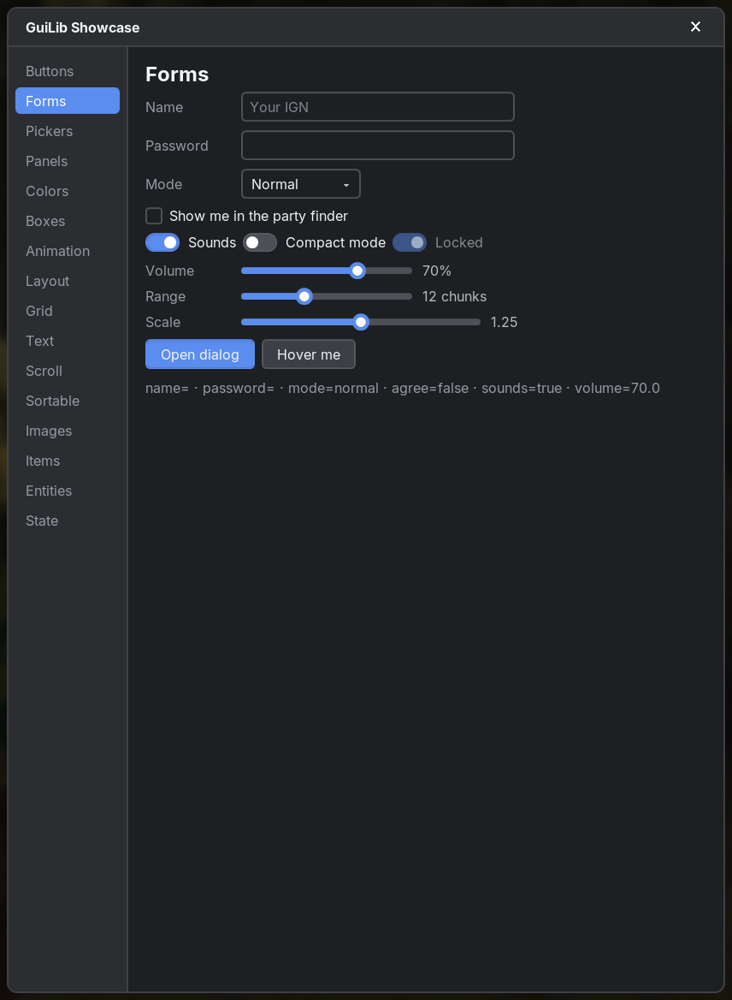
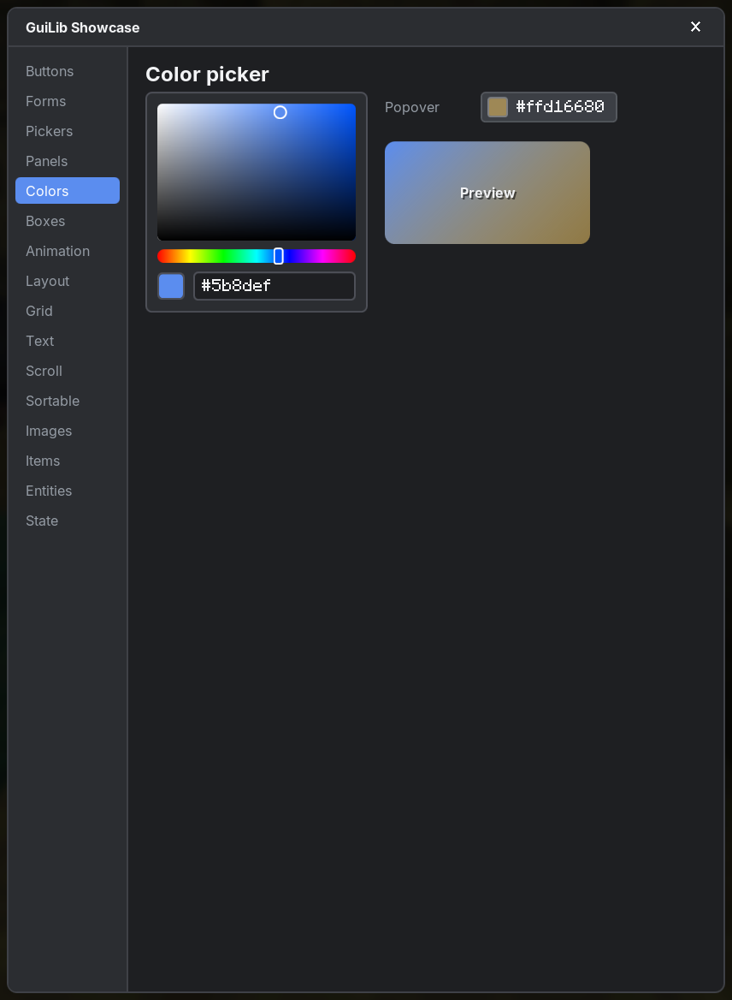
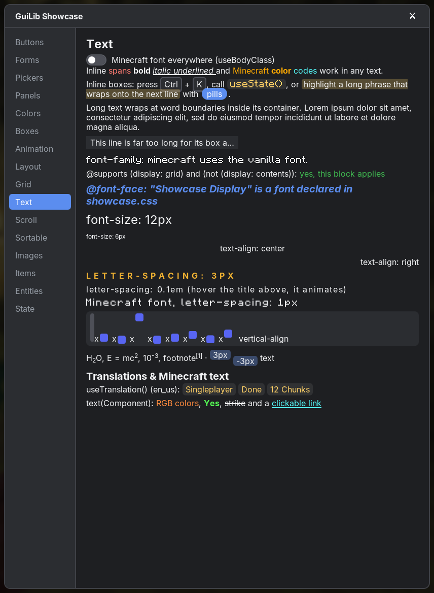
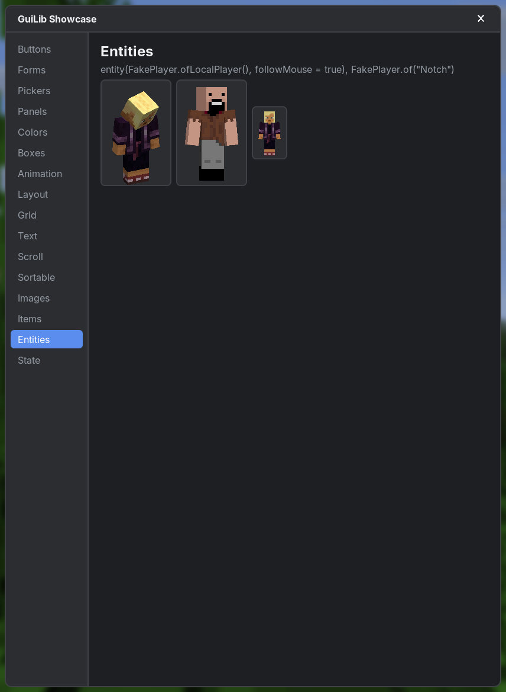

GuiLib
A UI library for Minecraft Fabric mods that works like web development: React-style components and hooks in a Kotlin DSL with HTML tag names, styled with real .css files.
val Counter = component("Counter") {
var count by useState(0)
div(className = "card") {
span(className = "label") { +"Clicked $count times" }
button(className = "primary", onClick = { count++ }) { +"Click me" }
}
}
GuiLib.open(Counter, stylesheets = listOf("mymod:ui/counter.css"))/* src/main/resources/assets/mymod/ui/counter.css */
body { display: flex; align-items: center; justify-content: center; }
.card { display: flex; gap: 6px; align-items: center; padding: 8px 10px; background-color: #1e1f22; border-radius: 6px; }
.primary { background-color: #5b8def; }
.primary:hover { background-color: #6f9cf2; }#Why GuiLib
Developers and AI models already know HTML, React and CSS extremely well. GuiLib keeps their names and behaviour wherever possible (padding, justify-content, :hover, useState, onClick, className, keys, event bubbling, …), so UIs can be written quickly and correctly. Where GuiLib differs from the web it is documented on Differences from the web.

#Features
Components & hooks
Function components with props, useState, useEffect, useMemo, useRef, context, keyed lists. Only changed components re-render.
Real CSS
Stylesheets from resources, cascade, specificity, !important, variables, calc(), :hover, :nth-child(). Errors are warnings, never crashes.
Layout
Box model, block & inline flow, flexbox, CSS grid, relative/absolute/fixed positioning, scroll containers.
Animation
transition and @keyframes for colors, sizes, opacity, gradients and transforms (translate, scale, rotate, skew).
Rendering
Anti-aliased rounded corners and borders, gradients, TTF text (Inter), the vanilla font, PNG & SVG images, items and player models.
25+ ready-made controls
Inputs, switch, sliders, number field, selects with search, tabs, accordions, context menus, toasts, color picker, sortable lists …
#Where to start
- Getting started: add GuiLib to your mod and open your first screen.
- Components & hooks: how UIs are structured.
- Elements and Form controls: everything you can put on screen.
- CSS: every supported selector, value and property.
- Differences from the web: read this once; it saves time.
/) to jump to any function, hook or CSS class.#Gallery






